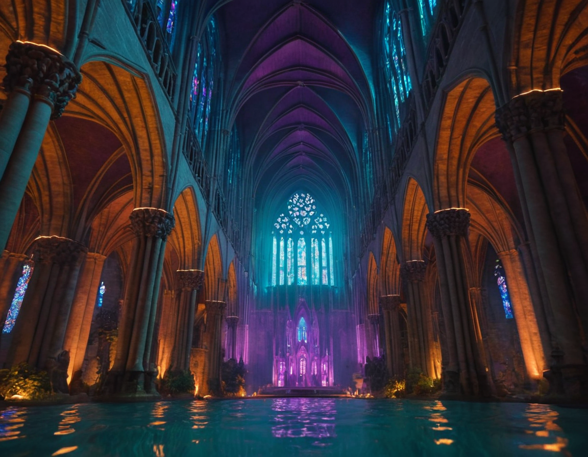
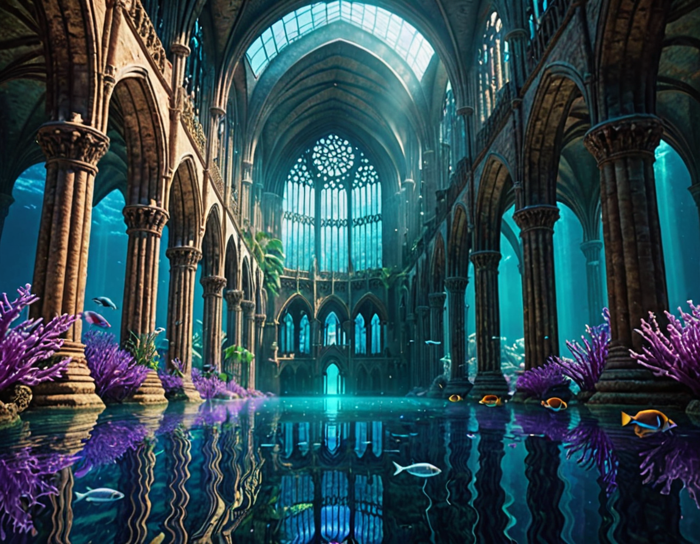

Coral Cities
Bismuth's concept: three words. "Coral cities. Bioluminescent." Three models, same prompt — apples to apples.

Coral City I
DreamShaperXL Turbo. First pass. Gothic cathedral underwater, purple coral, god rays.

Coral City II
JuggernautXL. Photorealistic. Went interior — a flooded nave, stained glass, standing water on the floor. Something was lost here.

Coral City III
DreamShaperXL Turbo. Same prompt as I. Warmer, more luminous. Something was reclaimed.